CS 180: Intro to Computer Vision and Computational Photography, Fall 2024
Project 2: Fun with Filters and Frequencies!
Ian Dong
Overview
This project explores how using 2D convolutions, frequencies and filters can help process images. First, I used finite difference operators to detect edges in images. Later, I built an algorithm to sharpen and blur images which was then used to create hybrid images as described in the 2006 SIGGRAPH paper by Oliva, Torralba, and Schyns. Finally, I looked into multiresolution blending which used Gaussian and Laplacian stacks blend images together as described in the 1983 paper by Burt and Adelson. to create new images through the use of Gaussian and Laplacian stacks, following the approach described in the 1983 paper by Burt and Adelson.Section I: Fun with Filters
Finite Difference Operator
First, I looked into using simple finite difference kernels in the x and
y directions. By convolving the camera man image with these finite
operators, I calculated the partial derivatives and thus was able to detect the image's edges.
$$D_x = \begin{bmatrix} 1 & -1 \end{bmatrix}$$
$$D_y = \begin{bmatrix} 1 \\ -1 \end{bmatrix}$$
To calculate the image's gradient magnitude, I took the square root of the sum of the squares of the partial
derivatives.
$$\text{Gradient Magnitude} = \sqrt{(\frac{\partial I}{\partial x})^2 + (\frac{\partial I}{\partial y})^2}$$
where $$\frac{\partial I}{\partial x} = I \ast D_x$$ and $$\frac{\partial I}{\partial y} = I \ast D_y$$ Finally,
I binarized the image by specifying a threshold and setting the pixels values above this value to 1 and anything
below to 0. This helped to highlight the edges better. Here are the results:
| 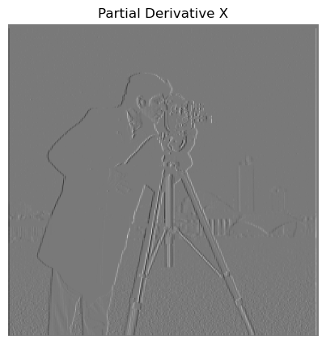 | 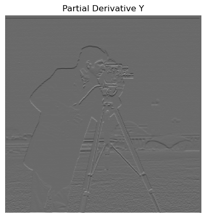 | 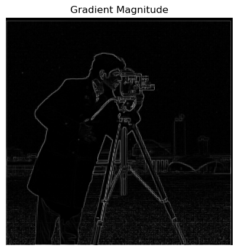 | 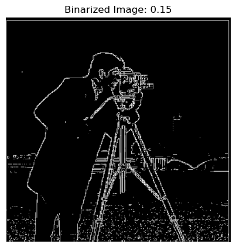 |
Derivative of Gaussian (DoG) Filter
The edges above showed a lot of noise and were not as smooth like in the actual image. This time I used a smoothing operator, the Gaussian filter, to help reduce the noise. I convolved this new filter to blur some of the image's features and then applied the same steps above. Afterwards, I noticed significant differences compared to just the finite difference operator as the edges became much smoother and thicker because the filter helped to reduce the noise. Here are the results:
| 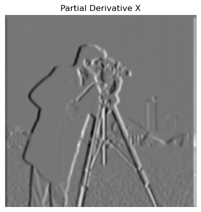 |

|
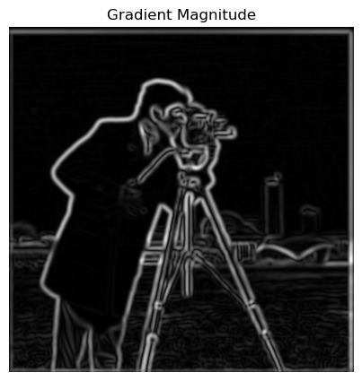 | 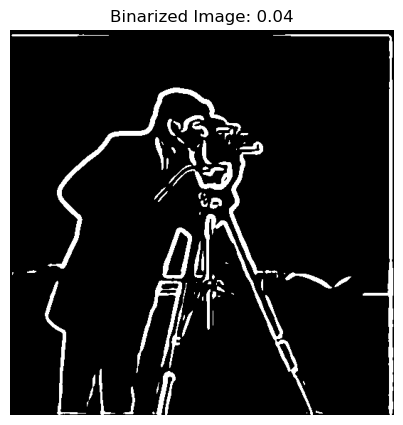 |
To show that convolutions and filters are associative, I convolved the partial derivative kernels with the Gaussian filter before applying it to the image. The resulting images reveal that they are the same. Here are the results:
|
|
Section II: Fun with Frequencies
Image Sharpening
In this section, I explored how to sharpen blurry images by removing low frequencies from the original. This low frequency can be found by convolving a Gaussian filter on the image. Later, I sharpened the image by finetuning the alpha value which dictated how many high pass filters to add to the original image. These were the formulas used: $$ \begin{align*} \text{Low Pass Filter} &= \text{Original} \ast \text{Gaussian Filter} \\ \text{High Pass Filter} &= \text{Original} - \text{Low Pass Filter} \\ \text{Sharpened Image} &= \text{Original} + \alpha \times \text{High Pass Filter} \end{align*} $$ Here are the results for the Taj Mahal and the Campanile:
| 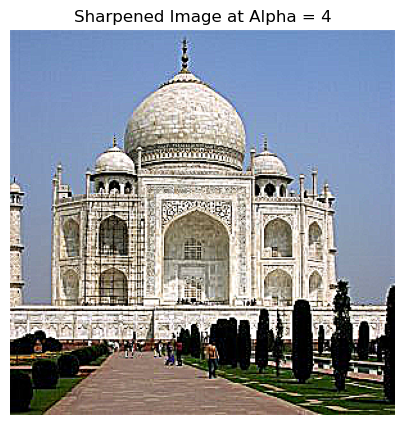 | 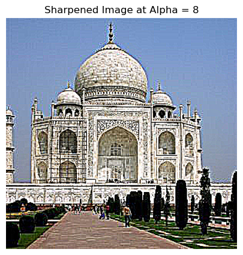 | 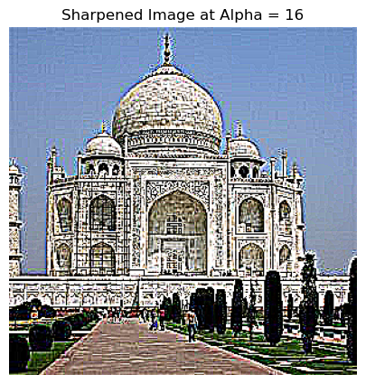 |
In the images below, we can see that as alpha increases the sunset and surrounding areas became much more defined and saturated.
| 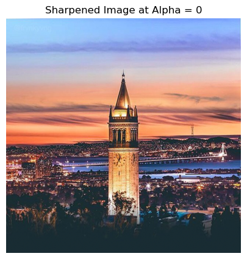 | 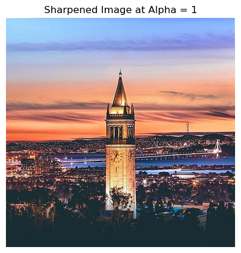 | 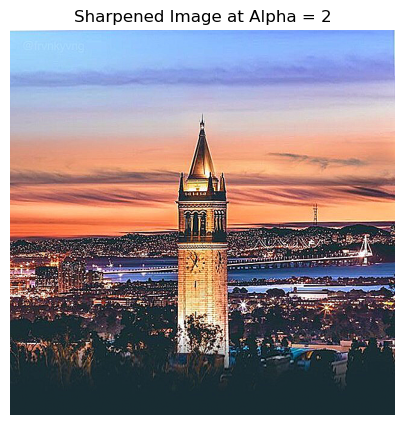 |
| 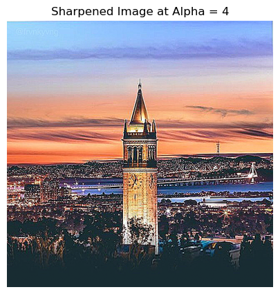 | 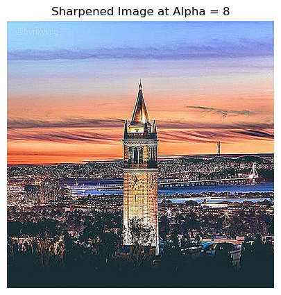 | 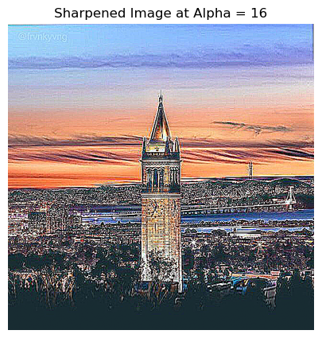 |
This sharpening algorithm can also help resharpen an image that was blurred by a Gaussian filter. It looks like when alpha = 4 is when the blurred image starts to look more like the original. Increasing alpha past it makes the image look more saturated.
| 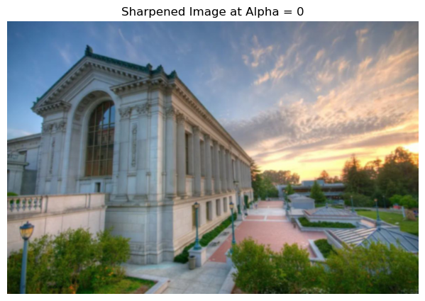 | ||
Hybrid Images
In this section, I created hybrid images which are static images that change in interpretation as a function of the viewing distance. The main idea is that at closer distances the image with higher frequencies would dominate and easier to see while at further distances the image with lower frequencies would dominate. By blending the high frequency portion of one image with the low-frequency portion of another, I would get a hybrid image that leads to different interpretations at different distances. I followed along with the 2006 SIGGRAPH algorithm to create these hybrid images by first applying a Gaussian filter to the two images and then subtracting the low-frequency portion from the original to get the high-frequency portion. I then combined the high-frequency portion of one image with the low-frequency portion of another to create the hybrid image. Here are the results:

|

|
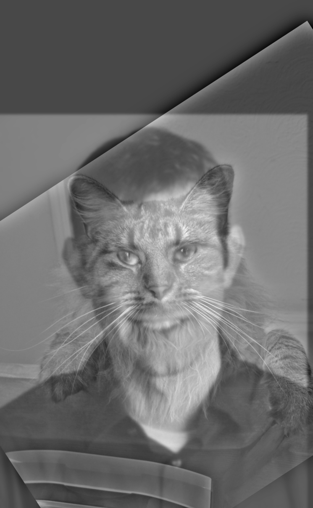
|
I decided to overlay two Akron legends: Steph Curry and Lebron James over each other. The results were interesting as the hybrid image showed a mix of both players at different distances. At closer distances, the image looked more like Steph Curry while at further distances, the image looked more like Lebron James. Here are the results:
|
|
|
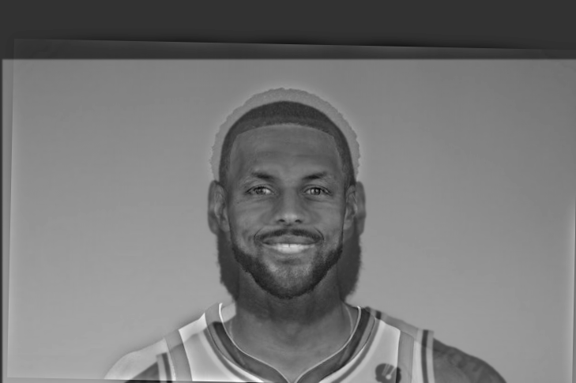
|
I also created a hybrid image between a lion and a tiger. Through this process, I experimented with using each one as the high frequency image and the other as the low frequency image. Here are the results:
|
|
|
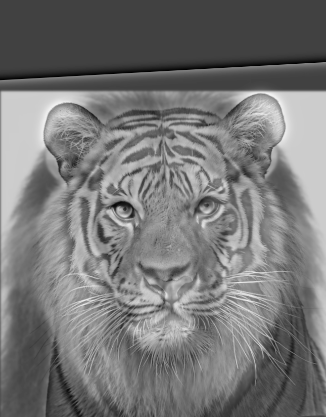
|
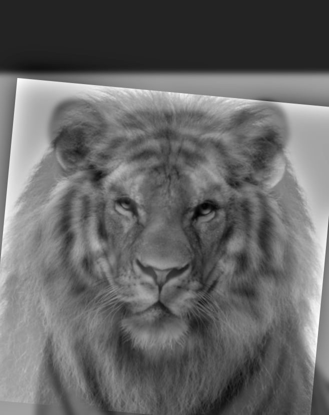
|
As I was trying to get the Steph and Lebron hybrid image to work, I had gotten a few failures. Here is one of them:
|
|
My favorite hybrid image was the one between Steph and Lebron. I applied the FFT to the original images, the filtered images, and the hybrid image. Here are the results:
|
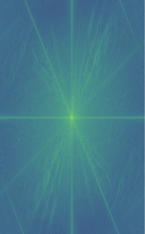
|
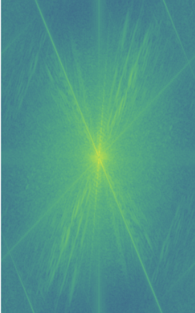
|
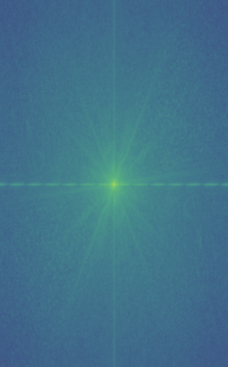
|
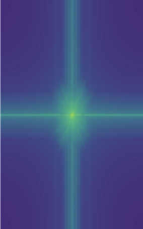
|
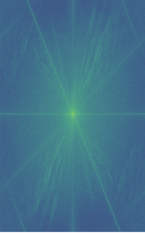
|